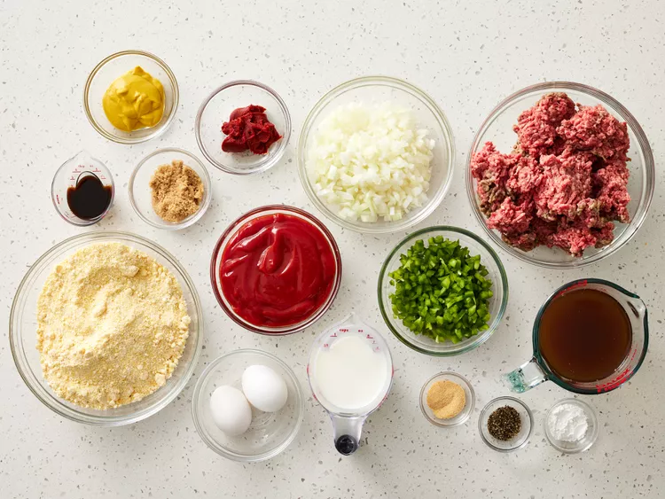
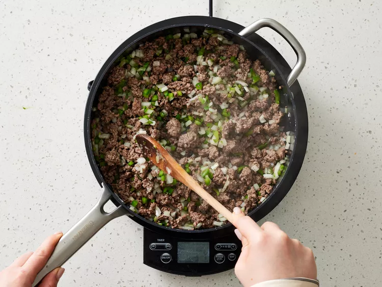
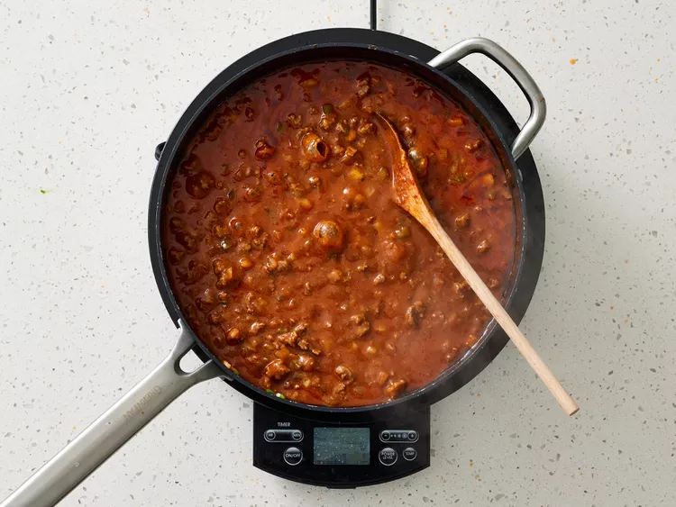
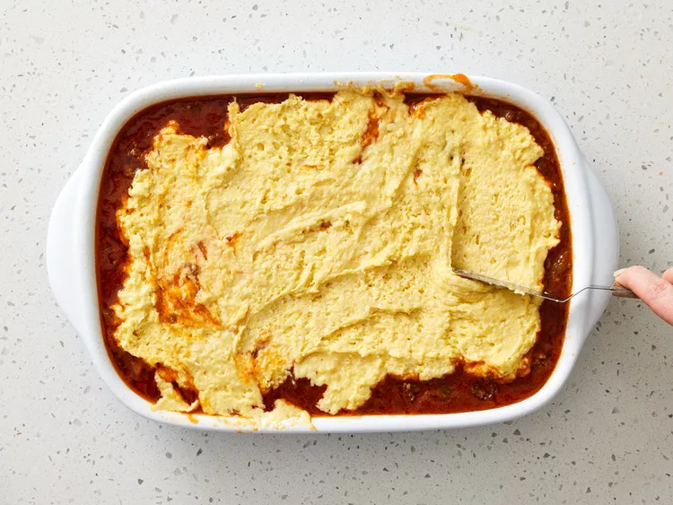
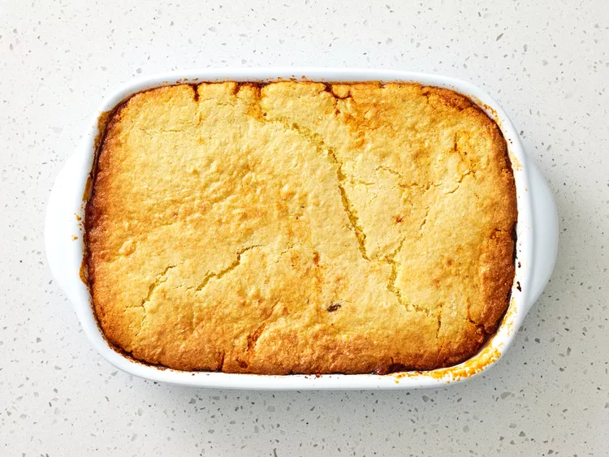

This sloppy Joe cornbread casserole pairs the best sloppy Joe you'll ever make with a cornbread top instead of a bun, and it's still great for feeding a crowd.
Gather all ingredients. Preheat oven to 350 degrees F (175 degrees C). Lightly spray a 9x13-inch baking dish with cooking spray.
Heat a large skillet over medium-high heat; add ground beef, and cook, stirring occasionally and breaking up meat into smaller pieces with a wooden spoon, until almost fully browned, about 4 minutes. Add onion and bell pepper, and cook over medium-high, stirring occasionally, until softened and tender, 6 to 8 minutes.
Stir in tomato paste; cook, stirring constantly, until tomato paste has slightly darkened in color, about 2 minutes. Stir in beef broth, using a spatula to scrape any browned bits from bottom of pan. Stir in ketchup, mustard, Worcestershire sauce, sugar, garlic powder, and black pepper until fully combined. Bring to a boil over medium-high, and cook, stirring occasionally, until sauce thickens and bubbles appear all over the surface, about 7 minutes. Remove from heat, and transfer to the prepared baking dish.
Whisk together corn muffin mix, milk, baking powder, and eggs in a medium bowl until fully combined; spoon in an even layer over sloppy Joe filling.
Bake in the preheated oven until cornbread is golden brown and a wooden pick inserted in the center comes out clean, 20 to 25 minutes. Serve immediately.
